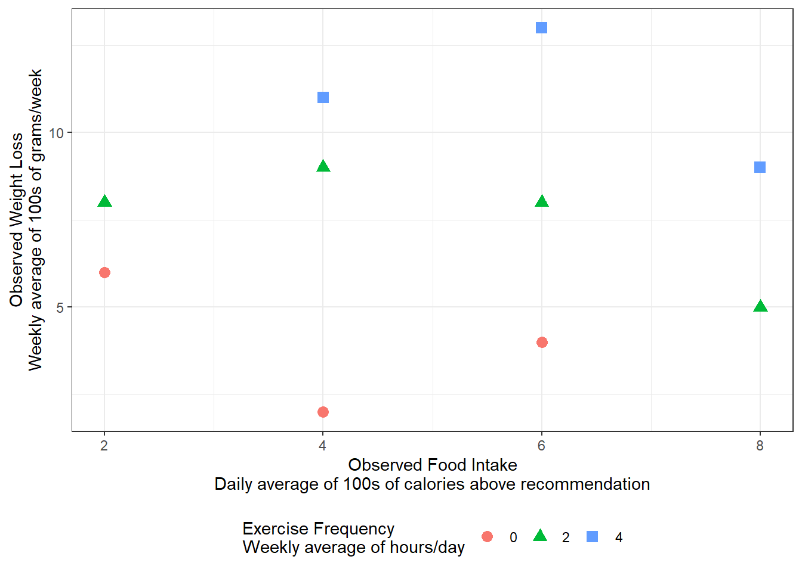
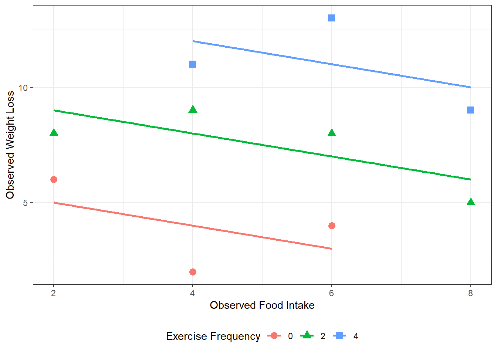

3 D&H Ch3a - Multiple Regression: “Weight”
Compiled: September 18, 2025
Darlington & Hayes, Chapter 3’s first example
Darlington, Richard B., and Andrew F. Hayes. Regression Analysis and Linear Models : Concepts, Applications, and Implementation, Guilford Publications, 2016. ProQuest Ebook Central, http://ebookcentral.proquest.com/lib/usu/detail.action?docID=4652287. Created from usu on 2025-01-29 01:13:21.
Outside resource * https://www.harshaash.com/R/part-and-partial-corr/ * https://dstanley4.github.io/psyc4780bookdown/multiple-regression.html
Reference:
- Knapp, T. R. (1996). Semi-Partial Correlations: I Don’t Need Them; You Can Have Them. Mid-Western Educational Researcher, 9(4), 4.
# install.packages("remotes")
# remotes::install_github("sarbearschwartz/apaSupp") # 9/17/2025
library(tidyverse)
library(flextable)
library(apaSupp) # not on CRAN, get from GitHub (above)
library(interactions)
library(effectsize)
library(parameters)
library(car)
library(emmeans)3.1 PURPOSE
3.1.2 Data Description
Suppose you conducted a study examining the relationship between food consumption and weight loss among people enrolled (n = 10) in a month-long healthy living class.
Dependent Variable (DV)
lossaverage weight loss in hundreds of grams per week
Independent Variables (IVs)
exeraverage weekly hours of exercisedietaverage daily food consumption (in 100s of calories about the recommended minimum of 1,000 calories required to maintain good health)metametabolic rate
Manually enter the data set provided on page 44 in Table 3.1
df_loss <- tibble::tribble(~id, ~exer, ~diet, ~meta, ~loss,
1, 0, 2, 15, 6,
2, 0, 4, 14, 2,
3, 0, 6, 19, 4,
4, 2, 2, 15, 8,
5, 2, 4, 21, 9,
6, 2, 6, 23, 8,
7, 2, 8, 21, 5,
8, 4, 4, 22, 11,
9, 4, 6, 24, 13,
10, 4, 8, 26, 9)df_loss %>%
dplyr::select("ID" = id,
"Exercise\nFrequency" = exer,
"Food\nIntake" = diet,
"Weight\nLoss" = loss) %>%
flextable::flextable() %>%
apaSupp::theme_apa(caption = "D&H Table 3.1: Exercise, Food Intake, and Weight Loss") %>%
flextable::colformat_double(digits = 0) %>%
flextable::footnote(part = "header",
i = 1, j = 2:4,
value = flextable::as_paragraph(c("Weekly average of hours/day",
"Daily average of 100s of calories above recommendation",
"Weekly average of 100s of grams/week")))ID | Exercise | Food | Weight |
|---|---|---|---|
1 | 0 | 2 | 6 |
2 | 0 | 4 | 2 |
3 | 0 | 6 | 4 |
4 | 2 | 2 | 8 |
5 | 2 | 4 | 9 |
6 | 2 | 6 | 8 |
7 | 2 | 8 | 5 |
8 | 4 | 4 | 11 |
9 | 4 | 6 | 13 |
10 | 4 | 8 | 9 |
1Weekly average of hours/day | |||
2Daily average of 100s of calories above recommendation | |||
3Weekly average of 100s of grams/week | |||
3.2 EXPLORATORY DATA ANALYSIS
3.2.1 Summary Statistics
3.2.1.1 Univariate
df_loss %>%
dplyr::select("Exercise Frequency" = exer,
"Food Intake" = diet,
"Metabolic Rate" = meta,
"Weight Loss" = loss) %>%
apaSupp::tab_desc(caption = "Summary Statistics",
general_not = "Exercise captures daily average hours. Food intake is the average of 100's of calories above the recommendation. Metabolism is the metobalic rate. Weight loss is average weekly weight lost in 100s of grams.") NA | M | SD | min | Q1 | Mdn | Q3 | max | |
|---|---|---|---|---|---|---|---|---|
Exercise Frequency | 0 | 2.00 | 1.63 | 0.00 | 0.50 | 2.00 | 3.50 | 4.00 |
Food Intake | 0 | 5.00 | 2.16 | 2.00 | 4.00 | 5.00 | 6.00 | 8.00 |
Metabolic Rate | 0 | 20.00 | 4.14 | 14.00 | 16.00 | 21.00 | 22.75 | 26.00 |
Weight Loss | 0 | 7.50 | 3.31 | 2.00 | 5.25 | 8.00 | 9.00 | 13.00 |
Note. N = 10. NA = not available or missing; Mdn = median; Q1 = 25th percentile; Q3 = 75th percentile. Exercise captures daily average hours. Food intake is the average of 100's of calories above the recommendation. Metabolism is the metobalic rate. Weight loss is average weekly weight lost in 100s of grams. | ||||||||
3.2.1.2 Bivariate
df_loss %>%
dplyr::select("Weight Loss" = loss,
"Exercise Frequency" = exer,
"Food Intake" = diet) %>%
apaSupp::tab_cor(caption = "Correlations",
general_note = "Exercise captures daily average hours. Food intake is the average of 100's of calories above the recommendation. Weight loss is average weekly weight lost in 100s of grams.") %>%
flextable::hline(i = 2)Variable Pair | r | p | |
|---|---|---|---|
Weight Loss | Exercise Frequency | .860 | .001** |
Weight Loss | Food Intake | .047 | .898 |
Exercise Frequency | Food Intake | .380 | .282 |
Note. N = 10. r = Pearson's Product-Moment correlation coefficient.Exercise captures daily average hours. Food intake is the average of 100's of calories above the recommendation. Weight loss is average weekly weight lost in 100s of grams. | |||
* p < .05. ** p < .01. *** p < .001. | |||
3.2.2 Visualizations
3.2.2.1 Univariate
df_loss %>%
dplyr::select(id,
"Weight Loss\n(100 g/day)" = loss,
"Exercise Frequency\n(hr/day)" = exer,
"Food Intake\n(100 cal/day above 1000)" = diet,
"Metabolic Rate" = meta) %>%
tidyr::pivot_longer(cols = -id) %>%
ggplot(aes(value)) +
geom_histogram(binwidth = 1,
color = "black",
alpha = .25) +
theme_bw() +
facet_wrap(~ name,
scale = "free_x") +
labs(x = NULL,
y = "Count")
Figure 3.1
Univariate Distibution on Continuous Measures

3.2.2.2 Bivariate
Figure 3.2
D&H Figure 3.1 (page 45) An example with positive simple association and negative partial association - BASIC
df_loss %>%
ggplot(aes(x = diet,
y = loss)) +
geom_point(aes(shape = factor(exer),
color = factor(exer)),
size = 3) +
theme_bw() +
labs(x = "Observed Food Intake)",
y = "Observed Weight Loss",
shape = "Exercise Frequency",
color = "Exercise Frequency") +
theme(legend.position = "bottom")
Figure 3.3
D&H Figure 3.1 (page 45) An example with positive simple association and negative partial association - BETTTER
df_loss %>%
dplyr::mutate(exer = factor(exer)) %>%
ggplot(aes(x = diet,
y = loss)) +
geom_point(size = 3) +
theme_bw() +
labs(x = "Observed Food Intake)",
y = "Observed Weight Loss",
shape = "Exercise Frequency",
color = "Exercise Frequency") +
theme(legend.position = "bottom") +
geom_smooth(aes(group = 1),
method = "lm",
formula = y ~ x,
se = FALSE)
Figure 3.4
D&H Figure 3.1 (page 45) An example with positive simple association and negative partial association - WORST
df_loss %>%
dplyr::mutate(exer = factor(exer)) %>%
ggplot(aes(x = diet,
y = loss,
group = exer)) +
geom_point(aes(shape = exer,
color = exer),
size = 3) +
theme_bw() +
labs(x = "Observed Food Intake",
y = "Observed Weight Loss",
shape = "Exercise Frequency",
color = "Exercise Frequency") +
theme(legend.position = "bottom") +
geom_smooth(aes(color = exer),
method = "lm",
formula = y ~ x,
se = FALSE)
Figure 3.5
D&H Figure 3.1 (page 45) An example with positive simple association and negative partial association - BEST

3.3 REGRESSION ANALYSIS
3.3.1 Fit the models
- The dependent variable (DV) is weight loss (\(Y\))
- The independent variables (IVs) are exercise and diet (\(X\))
3.3.2 Equations
\[ \hat{loss} = 4 + 1.75(exercise) \\ \hat{loss} = 7.14 + 0.07(food) \\ \hat{loss} = 6 + 2(exercise) -0.5(food) \\ \hat{loss} = -1.636 + 1.045(exercise) -1.136(food) + 0.636(metabolism)\\ \]
3.3.3 Tables
| Model 1 | Model 2 | Model 3 | ||||||
|---|---|---|---|---|---|---|---|---|---|
Variable | b | (SE) | p | b | (SE) | p | b | (SE) | p |
(Intercept) | 4.00 | (0.91) | .002** | 7.14 | (2.92) | .040* | 6.00 | (1.27) | .002** |
exer | 1.75 | (0.36) | .001** | 2.00 | (0.33) | < .001*** | |||
diet | 0.07 | (0.54) | .898 | -0.50 | (0.25) | .088 | |||
AIC | 43.54 | 57.23 | 41.08 | ||||||
BIC | 44.45 | 58.14 | 42.29 | ||||||
R² | .746 | .002 | .838 | ||||||
Adjusted R² | .714 | -.123 | .791 | ||||||
Note. | |||||||||
* p < .05. ** p < .01. *** p < .001. | |||||||||
apaSupp::tab_lms(list("Model 1\nExercise" = fit_lm_exer,
"Model 2\nFood Intake" = fit_lm_diet,
"Model 3\nBoth" = fit_lm_both),
var_labels = c("exer" = "Exercise",
"diet" = "Food"),
narrow = TRUE,
docx = "DH_ch3_tab_lm3.docx",
caption = "Parameter Estimates for Weight Loss Regressed on Exercise Frequency and Food Intake",
general_note = "Dependent variable is average weekly weight lost in 100s of grams. Exercise is daily average hours and food intake is the average of 100's of calories above the recommendation. ")
| Model 1 | Model 2 | Model 3 | |||
|---|---|---|---|---|---|---|
Variable | b | (SE) | b | (SE) | b | (SE) |
(Intercept) | 4.00 | (0.91) ** | 7.14 | (2.92) * | 6.00 | (1.27) ** |
Exercise | 1.75 | (0.36) ** | 2.00 | (0.33) *** | ||
Food | 0.07 | (0.54) | -0.50 | (0.25) | ||
AIC | 43.54 | 57.23 | 41.08 | |||
BIC | 44.45 | 58.14 | 42.29 | |||
R² | .746 | .002 | .838 | |||
Adjusted R² | .714 | -.123 | .791 | |||
Note. Dependent variable is average weekly weight lost in 100s of grams. Exercise is daily average hours and food intake is the average of 100's of calories above the recommendation. | ||||||
* p < .05. ** p < .01. *** p < .001. | ||||||
apaSupp::tab_lms(list("Model 3\nTwo Predictors" = fit_lm_both,
"Model 4\nThree Predictors" = fit_lm_three),
var_labels = c("exer" = "Exercise Freq",
"diet" = "Food Intake",
"meta" = "Metabolic Rate"),
caption = "Parameter Estimates for Weight Loss Regressed on Exercise Frequency, Food Intake, and Metabolic Rate",
general_note = "Dependent variable is average weekly weight lost in 100s of grams. Exercise is daily average hours and food intake is the average of 100's of calories above the recommendation. ")
| Model 3 | Model 4 | ||||
|---|---|---|---|---|---|---|
Variable | b | (SE) | p | b | (SE) | p |
(Intercept) | 6.00 | (1.27) | .002** | -1.64 | (2.93) | .597 |
Exercise Freq | 2.00 | (0.33) | < .001*** | 1.05 | (0.42) | .048* |
Food Intake | -0.50 | (0.25) | .088 | -1.14 | (0.29) | .008** |
Metabolic Rate | 0.64 | (0.23) | .033* | |||
AIC | 41.08 | 34.94 | ||||
BIC | 42.29 | 36.45 | ||||
R² | .838 | .928 | ||||
Adjusted R² | .791 | .892 | ||||
Note. Dependent variable is average weekly weight lost in 100s of grams. Exercise is daily average hours and food intake is the average of 100's of calories above the recommendation. | ||||||
* p < .05. ** p < .01. *** p < .001. | ||||||
3.3.4 Visualization
Figure 3.6
Darlington & Hayes: Figure 3.2, page 49
interactions::interact_plot(model = fit_lm_both,
pred = diet,
modx = exer,
modx.values = 0:4) +
theme_bw() interactions::interact_plot(model = fit_lm_both,
pred = exer,
modx = diet,
modx.values = c(0, 2, 4, 6, 8)) +
theme_bw() 
interactions::interact_plot(model = fit_lm_three,
pred = exer,
modx = diet,
mod2 = meta,
modx.values = c(8, 5, 2),
modx.labels = c("1800 cal",
"1500 cal",
"1200 cal"),
mod2.values = c(16, 22.75),
mod2.labels = c("Low Metabolic Rate\n(Q1 = 16.00)",
"High Metabolic Rate\n(Q3 = 22.75)"),
x.label = "Daily Exercise, hours",
y.label = "Weight Loss, 100s grams/week",
legend.main = "Food Consumption") +
theme_bw() +
theme(legend.position = c(0, 1),
legend.justification = c(-0.1, 1.1),
legend.background = element_rect(color = "black"),
legend.key.width = unit(2, "cm")) +
scale_y_continuous(breaks = c(0, 5, 10, 15),
labels = c(0, 500, 1000, 1500))
3.4 EFFECT SIZES
apaSupp::tab_lm(fit_lm_both,
var_labels = c("exer" = "Exercise Freq",
"diet" = "Food Intake"),
vif = TRUE,
caption = "Parameter Estimates for Weight Loss Regressed on Exercise Frequency and Food Intake, with Effect Size Estimates",
general_note = "Dependent variable is average weekly weight lost in 100s of grams. Exercise is daily average hours and food intake is the average of 100's of calories above the recommendation. ")b | (SE) | p |
| VIF |
|
| |
|---|---|---|---|---|---|---|---|
(Intercept) | 6.00 | (1.27) | .002** | ||||
Exercise Freq | 2.00 | (0.33) | < .001*** | 0.99 | 1.17 | .835 | .837 |
Food Intake | -0.50 | (0.25) | .088 | -0.33 | 1.17 | .091 | .360 |
R² | .838 | ||||||
Adjusted R² | .791 | ||||||
Note. N = 10. = standardize coefficient; VIF = variance inflation factor; = semi-partial correlation; = partial correlation; p = significance from Wald t-test for parameter estimate. Dependent variable is average weekly weight lost in 100s of grams. Exercise is daily average hours and food intake is the average of 100's of calories above the recommendation. | |||||||
* p < .05. ** p < .01. *** p < .001. | |||||||
apaSupp::tab_lm(fit_lm_three,
var_labels = c("exer" = "Exercise Freq",
"diet" = "Food Intake"),
vif = TRUE,
caption = "Parameter Estimates for Weight Loss Regressed on Exercise Frequency, Food Intake and Metabolic Rate, with Effect Size Estimates",
general_note = "Dependent variable is average weekly weight lost in 100s of grams. Exercise is daily average hours and food intake is the average of 100's of calories above the recommendation. ") b | (SE) | p |
| VIF |
|
| |
|---|---|---|---|---|---|---|---|
(Intercept) | -1.64 | (2.93) | .597 | ||||
Exercise Freq | 1.05 | (0.42) | .048* | 0.52 | 3.62 | .074 | .505 |
Food Intake | -1.14 | (0.29) | .008** | -0.74 | 3.08 | .179 | .713 |
meta | 0.64 | (0.23) | .033* | 0.80 | 7.00 | .090 | .557 |
R² | .928 | ||||||
Adjusted R² | .892 | ||||||
Note. N = 10. = standardize coefficient; VIF = variance inflation factor; = semi-partial correlation; = partial correlation; p = significance from Wald t-test for parameter estimate. Dependent variable is average weekly weight lost in 100s of grams. Exercise is daily average hours and food intake is the average of 100's of calories above the recommendation. | |||||||
* p < .05. ** p < .01. *** p < .001. | |||||||
3.4.1 Semipartial Correlation
Unique contribution
# A tibble: 2 × 5
Term r2_semipartial CI CI_low CI_high
<chr> <dbl> <dbl> <dbl> <dbl>
1 exer 0.835 0.95 0.675 1
2 diet 0.0914 0.95 0 1# A tibble: 3 × 5
Term r2_semipartial CI CI_low CI_high
<chr> <dbl> <dbl> <dbl> <dbl>
1 exer 0.0735 0.95 0.000735 1
2 diet 0.179 0.95 0.00179 1
3 meta 0.0904 0.95 0.000904 13.4.2 Eta Squared
# A tibble: 2 × 5
Parameter Eta2 CI CI_low CI_high
<chr> <dbl> <dbl> <dbl> <dbl>
1 exer 0.746 0.95 0.336 1
2 diet 0.0914 0.95 0 1# A tibble: 3 × 5
Parameter Eta2 CI CI_low CI_high
<chr> <dbl> <dbl> <dbl> <dbl>
1 exer 0.746 0.95 0.284 1
2 diet 0.0914 0.95 0 1
3 meta 0.0904 0.95 0 1# A tibble: 2 × 5
Parameter Eta2_partial CI CI_low CI_high
<chr> <dbl> <dbl> <dbl> <dbl>
1 exer 0.821 0.95 0.494 1
2 diet 0.36 0.95 0 1# A tibble: 3 × 5
Parameter Eta2_partial CI CI_low CI_high
<chr> <dbl> <dbl> <dbl> <dbl>
1 exer 0.912 0.95 0.699 1
2 diet 0.559 0.95 0.0445 1
3 meta 0.557 0.95 0.0425 13.4.3 Standardized Regression Coefficients
# A tibble: 3 × 5
Parameter Std_Coefficient CI CI_low CI_high
<chr> <dbl> <dbl> <dbl> <dbl>
1 (Intercept) 8.24e-17 0.95 -0.342 0.342
2 exer 9.87e- 1 0.95 0.598 1.38
3 diet -3.26e- 1 0.95 -0.716 0.0626# A tibble: 4 × 5
Parameter Std_Coefficient CI CI_low CI_high
<chr> <dbl> <dbl> <dbl> <dbl>
1 (Intercept) 1.65e-16 0.95 -0.254 0.254
2 exer 5.16e- 1 0.95 0.00601 1.03
3 diet -7.42e- 1 0.95 -1.21 -0.272
4 meta 7.96e- 1 0.95 0.0866 1.50 3.4.4 Cohen’s \(f\) (see chapter 8)
Cohen’s \(f\) (Cohen, 1988) is appropriate for calculating the effect size within a multiple regression model in which the independent variable of interest and the dependent variable are both continuous.
# A tibble: 2 × 5
Parameter Cohens_f2_partial CI CI_low CI_high
<chr> <dbl> <dbl> <dbl> <dbl>
1 exer 4.59 0.95 0.976 Inf
2 diet 0.563 0.95 0 Inf# A tibble: 2 × 5
Parameter Cohens_f2 CI CI_low CI_high
<chr> <dbl> <dbl> <dbl> <dbl>
1 exer 2.94 0.95 0.506 Inf
2 diet 0.101 0.95 0 Inf3.5 VARIANCE INFLATION FACTORS
exer diet
1.166667 1.166667 exer diet meta
3.621212 3.075758 7.000000 3.6 CONCLUSION: SPECIFIC QUESTIONS
b | (SE) | p |
| VIF |
|
| |
|---|---|---|---|---|---|---|---|
(Intercept) | 6.00 | (1.27) | .002** | ||||
exer | 2.00 | (0.33) | < .001*** | 0.99 | 1.17 | .835 | .837 |
diet | -0.50 | (0.25) | .088 | -0.33 | 1.17 | .091 | .360 |
R² | .838 | ||||||
Adjusted R² | .791 | ||||||
Note. N = 10. = standardize coefficient; VIF = variance inflation factor; = semi-partial correlation; = partial correlation; p = significance from Wald t-test for parameter estimate. | |||||||
* p < .05. ** p < .01. *** p < .001. | |||||||
2.5 % 97.5 %
(Intercept) 2.985316 9.01468433
exer 1.211792 2.78820808
diet -1.095829 0.09582931\[ \hat{loss} = 6 + 2(exercise) -0.5(food) \]
Suppose an examination of the literature on diet, exercise, and weight loss led you to the following conclusions:
- People who eat the minimum number of calories to maintain good health and who do not exercise at all will lose how much?
exer diet emmean SE df lower.CL upper.CL
0 0 6 1.27 7 2.99 9.01
Confidence level used: 0.95 The estimated marginal mean weight loss is 600 grams per week among thoes who eat the minimum number of calories to maintain good health and who do not exercise at, b = 6.00, 95% CI = [2.99, 9.01].
- If food intake is held constant, then each 1 hour of average daily exercise leads to how much more weight loss?
exer diet emmean SE df lower.CL upper.CL
0 5 3.5 0.820 7 1.56 5.44
1 5 5.5 0.583 7 4.12 6.88
2 5 7.5 0.478 7 6.37 8.63
3 5 9.5 0.583 7 8.12 10.88
4 5 11.5 0.820 7 9.56 13.44
Confidence level used: 0.95 Holding food consumption constant, each additional hour of daily exercise is associated with 200 grams additional weight lost per week, b = 2.00, 95% CI = [1.21, 2.79].
- If exercise is held constant, then each one unit of food intake per day (i.e., 100 calories) above the minimum to maintain good health translates to much weight gain?
diet emmean SE df lower.CL upper.CL
0 10.0 1.350 7 6.81 13.19
1 9.5 1.120 7 6.86 12.14
2 9.0 0.894 7 6.89 11.11
3 8.5 0.695 7 6.86 10.14
4 8.0 0.540 7 6.72 9.28
Confidence level used: 0.95 Holding exercise constant, each additional 100 calories of food consumed daily is associated with 50 grams weight gained per week, b = -0.50, 95% CI = [1.21, 2.79].
- If a person exercises 2 hours per week and eats 600 more calories than the minimum, how much weight would they loose weekly on average?
exer diet emmean SE df lower.CL upper.CL
2 6 7 0.54 7 5.72 8.28
Confidence level used: 0.95 On average, 700 grams were lost per week amonth participants who exrcised 2 hours a week and consumed 6,600 more calories, 95% CI [572, 828].